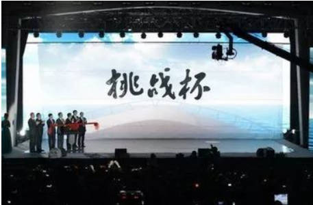

原标题：“挑战杯”宣传系列活动来啦~
宣传周正式上线
各位亲爱的小伙伴们，好消息，特大好消息，各位期待已久的“挑战杯”系列宣传活动于11月19日正式上线啦~。
在大众创业，万众创新的时代下，创业逐渐成为在校大学生和毕业大学生的一种职业选择方式。“挑战杯”也成为了大学生创新创业的主要展示舞台。为提高大学生创业思想意识，增加大学生创业知识储备，拓宽创业思路，培养创业技能，创新创业部特面向全体师生开展“挑战杯”宣讲会和“挑战杯”宣传体验周活动。
“挑战杯”宣讲会
此次宣讲会，我们有幸邀请到了在相关方面具有权威的老师以及参赛选手为大家答疑解惑，并会详细介绍“挑战杯”赛事流程、分享参赛经验，拉近大家与“挑战杯”的距离。
第一期宣讲会
时间：11月24日 19：00—21：00
地点：郑工金河信院汇报厅
第二期宣讲会
时间：12月1日19：00—21：00
地点：郑工金河信院汇报厅
”挑战杯“简介
“挑战杯”全国大学生课外学术科技作品竞赛（以下简称“‘挑战杯’竞赛”）是由共青团中央、中国科协、教育部、全国学联和地方政府共同主办，国内著名大学、新闻媒体联合发起的一项具有导向性、示范性和群众性的全国竞赛活动。"挑战杯"系列竞赛被誉为中国大学生学术科技"奥林匹克"，是目前国内大学生最关注最热门的全国性竞赛，也是全国最具代表性、权威性、示范性、导向性的大学生竞赛。
该竞赛每两年举办一次，旨在鼓励大学生勇于创新、迎接挑战的精神，培养跨世纪创新人才。自1989年首届竞赛举办以来，“挑战杯”竞赛始终坚持“崇尚科学、追求真知、勤奋学习、锐意创新、迎接挑战”的宗旨，在促进青年创新人才成长、深化高校素质教育、推动经济社会发展等方面发挥了积极作用，在广大高校乃至社会上产生了广泛而良好的影响，被誉为当代大学生科技创新的“奥林匹克”盛会。
党和国家领导人对竞赛活动十分关注，时任中共中央总书记、国家主席、中央军委主席的江泽民同志于1993年8月4日为"挑战杯"题写了杯名，时任国务院副总理李岚清同志等党和国家领导人等纷纷为"挑战杯"竞赛题词。

作品要求
“挑战杯”大学生课外学术科技作品竞赛的作品一般分为三大类：自然科学类学术论文、社会科学类社会调查报告和学术论文、科技发明制作，凡在举办竞赛终审决赛的当年7月1日起前正式注册的全日制非成人教育的各类高等院校的在校中国籍本专科生和硕士研究生、博士研究生（均不含在职研究生）都可申报参赛。每个学校选送参加竞赛的作品总数不得超过6件（每人只限报一件作品）、作品中研究生的作品不得超过3件，其中博士研究生作品不得超过1件。各类作品先经过省级选拔或发起院校直接报送至组委会，再由全国评审委员会对其进行预审，并最终评选出80%左右的参赛作品进入终审，终审的结果是，参赛的三类作品各有特等奖、一等奖、二等奖、三等奖、且分别约占该类作品总数的3%、8%、24%和65%。
申报条件
申报参赛的作品必须是距竞赛终审决赛当年7月1日前两年内完成的学生课外学术科技或社会实践活动成果，可分为个人作品和集体作品。申报个人作品的，申报者必须承担申报作品60％以上的研究工作，作品鉴定证书、专利证书及发表的有关作品上的署名均应为第一作者，合作者必须是学生且不得超过2人；凡作者超过3人的项目或者不超过3人，但无法区分第一作者的项目，均须申报集体作品。集体作品的作者必须均为学生。凡有合作者的个人作品或集体作品，均按学历最高的作者划分至本专科生、硕士研究生或博士研究生类进行评审。
责任编辑：张凤豪